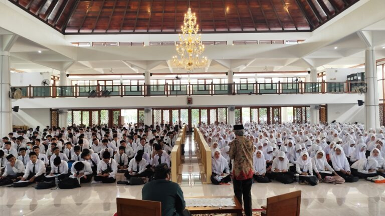
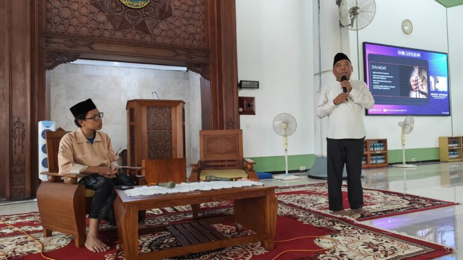
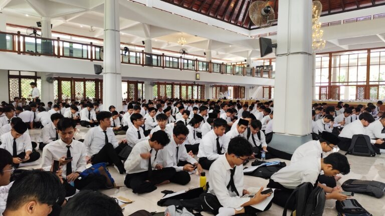

Oleh : itsash I 18 I Source / ITS Online

Suasana Kuliah Umum Mentoring Agama Islam Semester Genap 2024/2025
Kampus ITS, ITS News — Institut Teknologi Sepuluh Nopember (ITS) kembali menggelar Mentoring Agama Islam
Semester Genap 2024/2025 dengan berbagai rangkaian kegiatan. Kegiatan ini bertujuan membentuk karakter
mahasiswa baru (maba) muslim berbasis nilai-nilai Islam. Acara yang resmi dibuka dalam kuliah umum ini
berlangsung di Masjid Manarul Ilmi ITS, Sabtu (22/02).
Dalam pembukaan acara, Ketua Tim Pembina Kerohanian Islam (TPKI) ITS Prof Dr Muhammad Mashuri MT
menyampaikan bahwa mentoring merupakan sarana pencarian ilmu bagi mahasiswa.
“Kegiatan mentoring ini untuk mempersiapkan generasi emas di 2045 yang perlu dibekali dengan
segudang ilmu, termasuk keilmuan Islam,” ujarnya.
Lebih lanjut, dosen yang akrab disapa Mashuri ini menjelaskan, kegiatan mentoring ini terdiri dari
beberapa rangkaian acara. Adapun diawali dengan dengan kuliah umum yang menghadirkan empat materi utama
dari dosen-dosen agama Islam ITS sebagai pondasi awal. Setelah mendapatkan pemahaman dasar, mahasiswa
mengikuti kelas pendalaman dalam enam sesi yang mencakup diskusi dan ujian untuk menguji pemahaman
mereka.

Dosen agama islam ITS Prof Dr Ir Adi Soeprijanto MT saat memberikan materi sirah nabawi pada Kuliah Umum
Mentoring Agama Islam Semester Genap 2024/2025
Tak berhenti di situ, kegiatan ini kemudian diperkuat melalui kegiatan Ramadhan di Kampus (RDK) 46. Pada
kegiatan ini, maba mengikuti kajian inspiratif, kajian rutin Subuh, dan Tarawih selama bulan Ramadhan guna
memperdalam pemahaman keislaman secara aplikatif. “Melalui mentoring ini, mahasiswa mampu mengamalkannya
ilmu keislaman dalam kehidupan sehari-hari,” tambah Dosen Statistika ITS tersebut.
Selaras dengan Mashuri, Ketua Pelaksana Mentoring Agama Islam Semester Genap 2024/2025 Fathan Hidayatulloh
menjelaskan bahwa format mentoring terus berkembang. Perubahan kurikulum menyebabkan mata kuliah Agama Islam
dialihkan ke semester atas. Maka, peran mentoring bagi maba menjadi garda utama dalam memberikan arahan agar
siap menghadapi perkuliahan.
Fathan menyoroti bahwa kurikulum mentoring kini lebih berfokus pada tiga materi utama yaitu Tauhid, Ibadah,
dan Akhlak. Disertai dengan pendekatan yang lebih relevan terhadap kehidupan mahasiswa, ketiga materi
tersebut juga berisi isu akademik, hubungan mahasiswa dengan dosen, hingga tantangan sosial di era digital.
“Materi tersebut didukung dengan pemberian penugasan kepada peserta guna mencapai tujuan kegiatan,”
ungkapnya.

Maba ITS dalam kegiatan Mentoring Agama Islam Semester Genap 2024/2025 di Masjid Manarul Ilmi ITS
Menilik terlaksananya mentoring, ia berharap program ini bisa terus berkembang dan lebih terstruktur ke
depannya. Mentoring ini bukan sekadar formalitas, tetapi wadah untuk memperbaiki diri dan menjadi pribadi
muslim yang lebih baik. Mahasiwa yang tidak hanya cerdas secara intelektual, tetapi juga memiliki pondasi
moral dan spiritual yang kuat.
Dengan adanya program mentoring ini, ITS berharap dapat mencetak generasi muda tidak hanya unggul secara
akademik tetapi juga memiliki karakter yang kuat dan berlandaskan nilai-nilai Islam. “Pastinya untuk dapat
menghadapi tantangan yang lebih besar di masa depan,” tutup Fathan optimis. (*)
Tak Berhenti di Situ
Tak berhenti di situ, kegiatan ini kemudian diperkuat melalui kegiatan Ramadhan di Kampus (RDK) 46. Pada
kegiatan ini, maba mengikuti kajian inspiratif, kajian rutin Subuh, dan Tarawih selama bulan Ramadhan
guna memperdalam pemahaman keislaman secara aplikatif. “Melalui mentoring ini, mahasiswa mampu
mengamalkannya ilmu keislaman dalam kehidupan sehari-hari,” tambah Dosen Statistika ITS tersebut.